A 20-second AI film
The Monster and the Baby Punk
A four-metre monster falls from the sky. The threat is a baby. He wears a blue mohawk, a studded leather jacket and a belt of bottle-grenades.
Any resemblance to babies living or dead, or to actual monsters, is purely coincidental.
The bottle-grenade is the accessory Alexandre invented (your cursor is one). Click the ones that fall. Or anywhere: it splatters.
01 the film
The submitted film
The version submitted to The Loophole Project: exactly 20.00 seconds, 4 clips back to back, 15 shots. The one that shows the baby’s details best: his cowboy boot, his hand on the grenade, his laugh lit by the explosion.
Right now: with the punk riff (Lyria music mixed at 35%, under the film’s sound).
The music of the film
The full punk riff: 2 min 06 of overdriven guitars, composed with Google Lyria in Magnific. In the film it sits at 35%, under the shouts and explosions.
What to watch for (click to jump there)
03 the versions
Every version
The same baby, the same monster, and every way of telling it: the version submitted to the LoopHole Project, nine endings to choose from, and the trials. Hover a thumbnail to see it move without sound; click “Watch” to hear it. All of them have the punk music.
They meet the LoopHole Project brief · 20.00 s
-
Submitted 20.00 s
V3 · The baby’s details
Four clips back to back, fifteen shots: the cowboy boot, the hand on the grenade, the laugh. The most complete.
-
On brief 20.00 s
V2 · Close-ups, a camera that moves
A single sequence shot of six set-ups: the monster flees at the very instant of the “BOOM!”, handheld at mud level.
The first versions
-
20.00 s
V1 · The sequence shot
The very first: three shots in one take, locked-off camera, like the original dictation.
-
20.00 s
V1 · In four clips
One clip per required beat, each starting from the last frame of the one before.
Pick an ending
Nine endings for the same film, imagined by Alexandre: four surprise twists and five loops that send you back to the start. Here the 20-second rule no longer applies: each version keeps its best sequence, with no time limit (26 to 28 s). Pick an ending: you only see what changes, from the dive into the hole to the final fall (12 s). “Watch the whole film” plays the complete version.
Four surprise twists
Five loops: the ending that starts over
Trials · the endings squeezed into 20 s
To fit a surprise ending into 20 seconds, the chase was sped up twofold. The trial is instructive, but the baby running in fast-forward loses his charm: the longer endings, above, are better.
-
20.00 s
The monster mum
A mother monster six times larger looms out of the fog. For the first time, the baby is afraid.
-
20.00 s
The loop
The monster falls from the sky again. The baby, unimpressed, unhooks another grenade. Endlessly.
-
20.00 s
The punk mum
His mother arrives, same blue mohawk. She lifts him by the collar and scolds him.
-
20.00 s
The reconciliation
A baby monster climbs out of the hole in tears. The baby punk holds out a real bottle.
The outtakes · what we didn’t keep
The discarded takes, shown as they are. Each one taught the film something. (The very first launch, with Seedance 2.0, did not even produce a video.)
-
First attempt 5 s
Alexandre’s very first try
Before anything else, Alexandre tests on his own, in Magnific, with Hailuo and a sentence of his own: “The giant monster suddenly falls from the sky onto the ground.” The fall already works. But no baby, no sound: it is the starting point, not a shot from the film.
-
Discarded 6 s
The baby runs alongside
The chase from the first version, locked-off camera. The baby runs alongside the monster instead of after it, the grenades burst near him: you can no longer tell who is hunting whom. That shot is why the camera changed.
-
Discarded 4 s
“One… loud… BOOM!”
The close-ups are superb, but the baby reads the sound direction out loud: he says “One loud BOOM” instead of “BOOM!”. Redone with the single line written in black and white.
-
Discarded 7 s
The punk mum… without the forest
The punk mum arrives, scolds her son, confiscates his grenades. Everything is there except the set: the forest has vanished, and it looks like a black studio. Redone after plugging the forest photo back in.
The original 1080p files exist for every version: ask 3h33 for them.
04 making it
How we made it
No shoot, no camera: Alexandre’s idea, his two pictures, his dictation, then his director’s choices at every step. AI was the workshop. Here is the story, misfires included.
-
The starting point
1 The idea: turn everything around
The LoopHole Project requires a character who falls, discovers a threat, flees and jumps into a hole. Alexandre flips the rule: the character who falls from the sky is a hideous four-metre monster, and the threat that makes it flee is a baby. The film is built for the collective film’s loop: it begins with a fall and ends in a hole.
-
The characters
2 The baby’s accessories
The baby punk is a whole kit, and every piece is Alexandre’s idea: the electric-blue mohawk, the black studded leather jacket, the brown cowboy boots, and above all the belt of bottle-grenades, the cutest and most absurd weapon in the film. (Your cursor is one.)
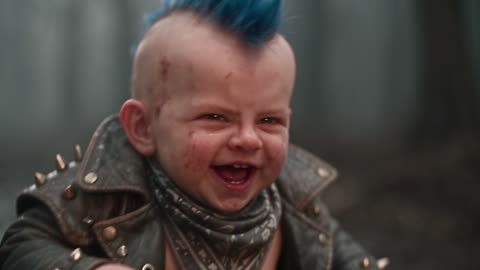
blue mohawk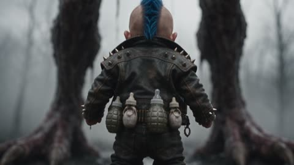
studded leather jacket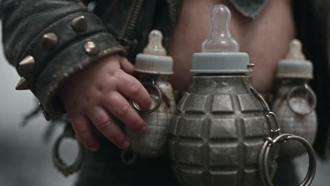
bottle-grenades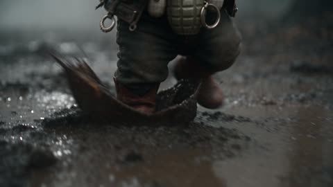
cowboy boots
-
The starting images
3 Two photographs for two characters
Before any video, Alexandre builds his two characters as stills. The monster is born in Grok, then enters Magnific. The baby arrives as a file, “BabyPunk.png”, imported into Magnific as well. Those two photographs are the reference for every shot: they are why the baby keeps his mohawk and the monster its claws from start to finish. Then he pulls character sheets from them: front, profile, back, close-ups of the face, the belt, the boots, the claws. See them below.
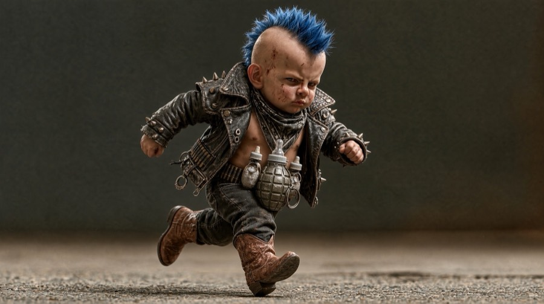
BabyPunk.png 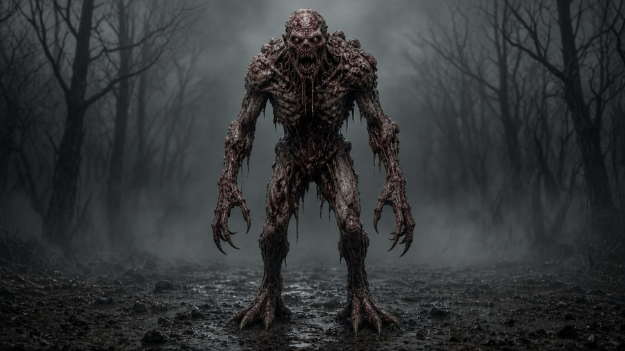
the monster, made with Grok -
The screenplay
4 Dictating the story
Alexandre dictates his film in one go, shot by shot:
“An incredible, horrible monster, falling from the sky… behind it, there is a very punk baby. He is tiny, but he goes boom!”
That sentence is the film’s basic principle. Everything else follows from it: every shot, every version, every ending is there to serve it.
- The reversal. In a monster film, the monster is what scares you. Here, the monster is the one who is scared. The threat is the smallest character on screen. The LoopHole Project requires “a character discovers a danger”: Alexandre decides that the danger will be a baby.
- The size gap. Four metres of raw flesh against a baby who only comes up to its knee. The whole staging plays on that difference: the little cowboy boot between the clawed paws, the low angle on the baby’s face, the monster’s head leaning down, puzzled, toward this tiny opponent.
- The “boom”. A single word is enough to reverse the balance of power. It is the trigger for the whole chase, and it becomes a directing rule: the “BOOM!” sets off the escape, with no reaction time at all.
- The tone. Horror for the set and the monster, a cartoon for the baby: a monster film that tips into comedy, with grenades that are bottles and explosions that end as geysers of milk.
From the dictation to the four beats of the LoopHole Project
In his dictation, Alexandre already lays out the whole film, in the order required by The LoopHole Project. His words, and what they became on screen:
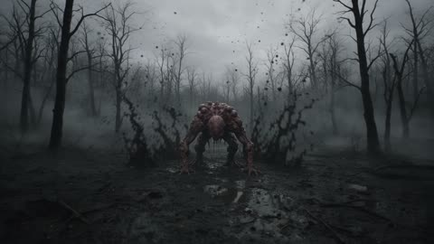
1 · Fall
“An incredible, horrible monster, falling from the sky. The camera is locked off and we see the monster fall from the sky.”
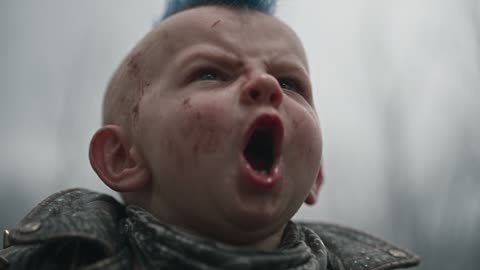
2 · Threat
“All of a sudden, you realise that behind the monster there is a very punk baby. He is tiny next to the monster, but he goes boom!”
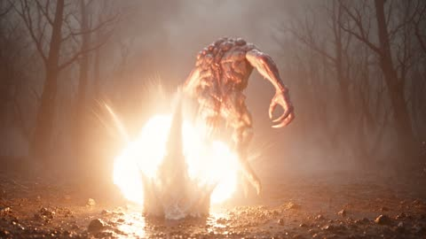
3 · Run
“The monster is very scared and starts to run. The baby has bottle grenades around his belt; he throws the grenades at the monster, and they explode one after another.”
4 · Jump
“Since it was running, there is a hole, it falls in. The baby is over the moon — he pulled it off.”
Two other sentences from the dictation matter. “I have reference photos; you won’t need me to describe it.”: the characters are his, and the starting images are authoritative. And “It’s a contest that will loop.”: the loop is in the idea from the first draft. That is where the endings that send you back to the start of the film will come from, later on.
-
The workshop
5 The workshop, in Magnific Spaces
The film is built on a single Magnific page: boxes linked by wires, launched all at once.
📷 2 photos 🌲 set ◯ the hole 🎬 clip 1 → 2 → 3 → 4 ♫ music 🎚 mix- The set, a dead forest, then the black hole dug into it: two Seedream 5 Pro images.
- The clips: Seedance 2.5, with their own sound. Each clip starts again from the last frame of the previous one: that is what makes the join feel fluid.
- The music: a punk riff from Google Lyria, “Polished Mayhem”, slipped under the film’s sound at 35%.
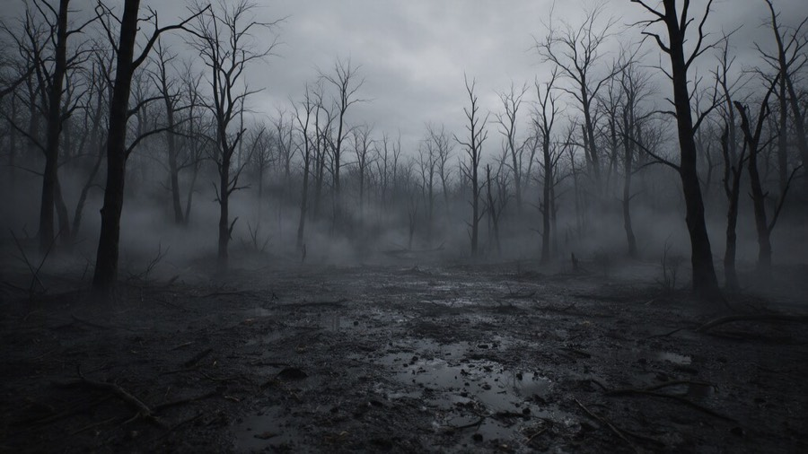
The set 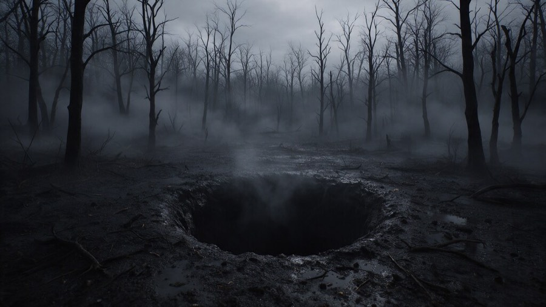
The hole His tools: Magnific Spaces for the workshop, and AI agents (Claude) to turn his notes into technical directions and build the Magnific page.
See the Magnific Space (you need a Magnific account, and access to it)
-
The trials
6 First launch: a miss
The first clip, given to Seedance 2.0, fails, without a word of explanation. Because everything is wired together, the rest cancels in a cascade. Relaunched with Seedance 2.5, same directions, same photograph: all four clips come through first time.
-
The edit
7 Editing to the thousandth
The machine always delivers a little too much: 481 frames instead of 480, or 20.04 s. The brief says 20 seconds at most. The film is recut to the frame: 480 frames at 24 a second, exactly 20.00 s.
-
Direction
8 The director’s choices
Alexandre watches his film again and gives his director’s notes:
- “More close-ups of the baby’s face.”
- A more dynamic camera: fast dollies, handheld at mud level.
- The “BOOM!” triggers the escape at once: the monster gets no reaction time left.
- “The details matter”: his face, his objects, his movements, his clothes, his run.
These are his orientation ideas. He then had them developed into much more precise prompts: shot by shot, second by second, with the framing, the gesture, the sound, and the details to keep from one shot to the next. Here is one, as it was sent to Seedance 2.5.
Read the prompt for the “BOOM!” shot (version 3, clip 2)
Written in English, the language the model follows best. In brackets: the images wired in as references.
No music, natural sound only. [last frame of clip 1] is the previous moment: same place, same colour grade and weather, the baby standing behind the monster's heels. [photo of the monster] is the monster: keep its exact anatomy, skin texture, claws and proportions: emaciated 4 m humanoid, bald, skinless grey-pink flesh, hanging flesh strips, glowing white eyes, needle teeth, long arms, long black claws, digitigrade legs. [photo of the baby punk] is the punk baby: keep his exact face, blue spiky mohawk, scowl, open studded leather jacket, grey bandana, baby-bottle grenade belt, dark jeans, brown cowboy boots. He reaches the monster's knee. Dialogue: the baby says exactly one word, BOOM, shouted once at 00:02. Nobody says anything else in this clip. Four fast shots, hard cuts, the baby's face is the star. Shot 1 (00:00-00:01): extreme close-up of the baby's face, low angle: eyes narrowing, mud on his cheek, blue mohawk spikes against the grey sky, lips pressed shut. Sound: a tiny angry breath. Shot 2 (00:01-00:02): insert close-up: his chubby hand grabs a baby-bottle grenade on his belt, the rubber teat wobbling, the metal ring glinting. Sound: click of the clip. Shot 3 (00:02-00:03): extreme close-up of the baby's face: he opens his mouth once and yells "BOOM!" straight up at the monster, then snaps his mouth shut. Shot 4 (00:03-00:04): whip pan to a wide low-angle shot. The yell and the escape are simultaneous: the monster is already sprinting away frame-right with no pause, screaming, mud exploding under its claws; the baby launches after it. Last frame: the monster running frame-right, the baby two strides behind. Cinematic creature-feature film, dark comedy tone, energetic camera. Lighting and cinematography are masterful and expertly accomplished. 1080p, rich details, sharp clarity, stable picture, realistic physics and motion, consistent character appearance across all shots, no morphing, no extra limbs, no deformed hands, no text, no logo, no watermark.
What was wrong in the very first version: a locked-off camera, and the baby was running alongside the monster instead of after it. The two moved side by side, the grenades burst near the baby: you could no longer tell who was hunting whom. Hence the camera that follows the chase, the monster in front, the baby behind. See the discarded take.
From there come V2, then V3: 4 clips, 15 shots, inserts on the boots, the hands, the belt. 120 + 96 + 144 + 120 frames: 480, exactly again.
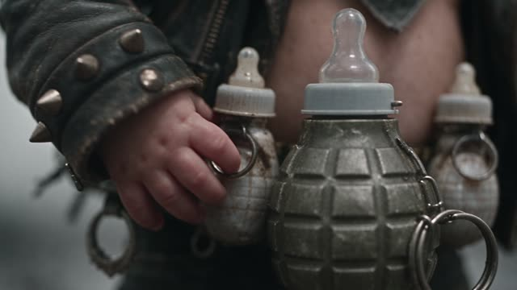
the hand 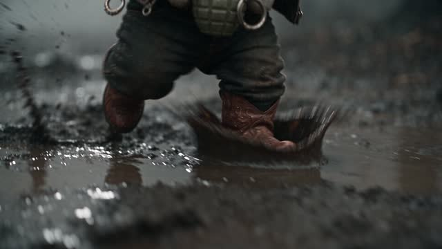
the cowboy boots 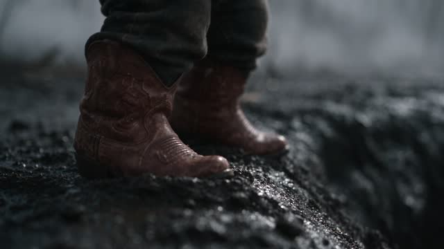
the edge of the hole -
The sound
9 “One… loud… BOOM!”
In V3, the baby was not saying “BOOM!”: he was saying “One loud BOOM”. The direction described his shout just after the line, and the machine spoke all of it. Caught by ear, confirmed by a word-for-word transcript, corrected: the baby says exactly one word, BOOM, once only. Now he only says “Boom!”.
-
The variations
10 The endings and the loops
Alexandre imagines what comes next: what happens after the hole? Four surprise twists (the monster mum, the monster’s return, the punk mum, the reconciliation), then five loops that bring you back to the start of the film. All of them start again from the last frame of V3.
-
The fixes
11 The punk mum, in the dark
The first punk mum appears in an all-black studio: the set image had not been wired to her box. Plugged back in, the scene is redone in the forest.
-
The rhythm
12 Refusing the fast-forward
To fit an ending into the LoopHole Project’s 20 seconds, we try speeding the chase up twofold. It holds on the clock, but Alexandre judges that the baby running in fast-forward does not work very well. His decision: the LoopHole Project gets V3, and for everything else, each version keeps its best sequence, with no duration limit.
05 the film strip
The contact sheets
First Alexandre’s character sheets, then each clip, frame by frame, like a lab contact sheet. Click a sheet to enlarge it.
The character sheets
Before shooting anything, Alexandre has his two characters pose. In Magnific he asks several image models (Seedream, Nano Banana, Flux) for a character sheet: “a full view from the front, in profile and from the back, together with detailed close-ups of the face, accessories, clothes, their materials and patterns”. Then he tightens it: “remove all the text […], do more close-ups of the face […] to make a video reference contact sheet”. Those sheets are what keep the baby and the monster identical from shot to shot.
The baby punk
The monster
The clips, frame by frame
02 the collective film
The Loophole Project
A collective film made with AI, with no jury and no ranking: every film that meets the brief goes in. Each creator makes 20 seconds at most, following four required beats, in order. Then all the films are edited end to end, in a loop: the hole my character dives into becomes the door into the next creator’s world.

Alexandre thought the idea was absolutely brilliant: creators from all over the world, each with their own world, and a single endless film in which you fall from one into the next. That is what gave birth to the monster and the baby punk. Discover The LoopHole Project
-
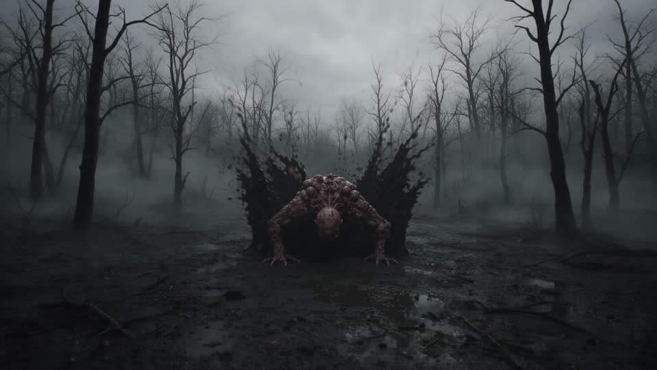
1 · FALL
Fall
A character falls from the sky and lands in a new world. Here: the monster, in a dead forest, on black mud.
0:00 → 0:05
-
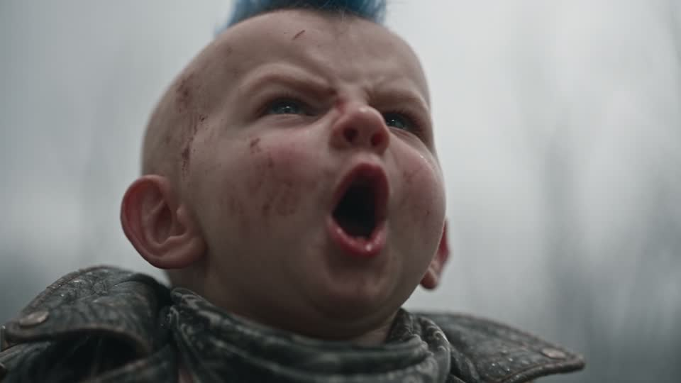
2 · THREAT
The threat
It discovers a danger. Here comes the reversal: the threat is a tiny baby punk who shouts “BOOM!” at it.
0:05 → 0:09
-
3 · RUN
Flee
It turns around and flees. The baby chases it, throwing his bottle-grenades: orange fire and geysers of milk.
0:09 → 0:15
-
4 · JUMP
Jump
It jumps into a clearly visible hole and vanishes. The baby, for his part, brakes at the edge, and triumphs.
0:15 → 0:20
The LoopHole Project: theloopholeproject.ai · submissions until 21 October 2026.
06 jump
JUMP.
The monster has jumped. In the collective film’s loop, this hole is the door to the next film.
07 make some noise
Share the baby
Did the film make you laugh? Pass it on, and help people discover The LoopHole Project. Every version also has its own “Share” button, with its own thumbnail.
Do you like this work? Buy Alexandre a coffee: it pays for the next films.
Buy me a coffee08 the shop
The shop
If you’re a fan of this baby, don’t hesitate. Leave your details: as soon as the shop is online, I’ll let you know.


Latest
First preview